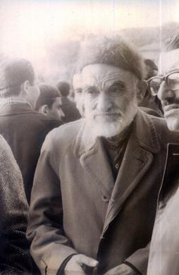

Mehmed Tahirî Mutlu (1900-1977)

Tahiri Mutlu, 1900 yýlýnda Isparta’ya baðlý Atabey ilçesinde doðdu. Babasý Hüseyin Hüsnü Efendi ve annesi de Zübeyde Hanýmdýr. Çocukluk yýllarý, manevî deðerler ön planda tutulan ve dinî hassasiyetleri olan bir aile ortamýnda geçti.Askerlik çaðýna gelinceye kadar yýllarýný memleketinde geçirdi. Aldýðý eðitim ve okullar hakkýnda ayrýntýlý bilgi olmasa da iyi bir eðitim gördüðü, önemli bir birikime sahip olmasýndan anlaþýlmaktadýr. Vatanî hizmetini yaptýðý sýrada Kurtuluþ Savaþý verilmekte idi. O da 1920 tarihinden itibaren dört yýl demiryollarýnda askerlik yaptý. Savaþ sonrasýnda gazilik unvaný ve madalyasý aldý. Kendisine gazilik maaþý da baðlandý. Ancak, o bu maaþý almadý.
Tahiri Mutlu 1931 yýlýnda ilçesindeki akrabalarý vasýtasýyla Risâle-i Nur ile tanýþtý. Bu tanýþmadan sonra Hafýz Zühdü’nün oðlu Eþref ile birlikte Barla’ya giderek Bediüzzaman Hazretlerini ziyaret etti. Bu ziyaret kendisini çok etkiledi. Bunun neticesi olarak Risâle-i Nur hizmetinde yerini almaya baþladý. 1942 yýlýnda Ayetü’l-Kübra Risâlesi’nin bastýrýlmasý maksadýyla Ýstanbul’da kýrk beþ gün kaldý. Bozkurt Matbaasý’nda bu risâlenin bastýrýlmasýný saðladý. Bu sýrada ekmek karne ile verildiðinden belediyeye gidip karnesini imzalatýr ve ondan sonra ekmeðini alýrdý. Bu arada sýk sýk Sahaflar Çarþýsý’na giderek Bediüzzaman’ýn eserlerinin olup olmadýðýný sorardý. Bu sormanýn neticesinde Ýþaratü’l-Ý’caz, Hakikat Çekirdekleri ve Lemeat adlý eserlerini bulup aldý.
Ýstanbul’da Ayetü’l-Kübra Risâlesini bastýrmaya muvaffak olan Tahiri Mutlu buradan ayrýlarak vapurla Ýnebolu’ya ve oradan da Kastamonu’ya geçti. Bu tarihlerde Bediüzzaman Hazretleri Kastamonu’da bulunuyordu. Görüþme sýrasýnda bastýrýlan Risâleleri gösteren Mutlu, ayrýca bulduðu diðer eserleri de takdim etti. Bediüzzaman Hazretleri özellikle Lemeat’ý görünce çok sevindi.
Tahiri Mutlu Bediüzzaman ve diðer talebeleri gibi takibattan nasibini aldý. 1943’te Denizli ve 1948’de Afyon hapishanelerinde yattý. Ayrýca, 1958 yýlýnda Ankara ve 1960’ta Isparta’da da hapis yattý. Mahpusluðu sýrasýnda da boþ durmadý. Etrafýndakilere iman hakikatlerini anlatmak için büyük gayret sarf etti. Karþýlaþtýðý sýkýntýlarý hiçbir zaman kendine dert edinmedi. Her zaman hizmeti birinci planda tuttu. Onun bu samimî tavrý Bediüzzaman’ýn dikkatinden kaçmadý ve kendisini takdir ederek bunu risâlelere kaydettirdi:
“Çok tecrübelerle ve bilhassa bu sýký ve sýkýntýlý hapiste kat’î kanaatim gelmiþ ki, Risâle-i Nur ile kýraeten ve kitabeten iþtigal, sýkýntýyý çok hafifleþtirir, ferah verir. Meþgul olmadýðým zaman o musibet tezâuf edip lüzumsuz þeylerle beni müteessir eder. Bazý esbaba binaen, ben en ziyade Hüsrev’i ve Hâfýz Ali (r.h.), Tahirî’yi sýkýntýda tahmin ettiðim halde, en ziyade temkin ve teslim ve rahat-ý kalb, onlarda ve beraberlerinde bulunanlarda görüyordum. “Acaba neden?” derdim. Þimdi anladým ki, onlar hakikî vazifelerini yapýyorlar; mâlâyâni þeylerle iþtigal etmediklerinden ve kaza ve kaderin vazifelerine karýþmadýklarýndan ve enâniyetten gelen hodfuruþluk ve tenkit ve telâþ etmediklerinden, temkinleriyle ve metanet ve itmi’nan-ý kalbleriyle Risâle-i Nur þakirtlerinin yüzlerini ak ettiler, zýndýkaya karþý Risâle-i Nur’un mânevî kuvvetini gösterdiler. Cenâb-ý Hak, onlardaki nihayet tevazu ve mahviyette tam izzet ve kahramanlýk seciyesini umum kardeþlerimize teþmil ettirsin. âmin.” (Þuâlar, s. 282).
Tahiri Mutlu, 1953 yýlýnda Bediüzzaman Hazretleri ile birlikte Barla’ya gitti. Ayrýlýþtan yaklaþýk yirmi yýl sonra yeniden buraya gelinmekteydi. Onlarla birlikte Zübeyir Gündüzalp de bu seyahate katýlmýþtý. Beraber kaldýklarý mekânlarý ziyaret ettiler. Kendini iman hizmetine vakfeden Mutlu, Bediüzzaman Hazretlerinin büyük ilgisine mazhar oldu. Talebelerinin kusurlu hareketlerine kýzan Bediüzzaman’ýn hiddetli ve kýzgýn anlarýnda, Tahiri Mutlu’nun gelmesi ile tavrýný deðiþtirdiði ve hemen yumuþamaya baþladýðý hatýralarda kaydedilmektedir. Böyle durumlarda hemen bu mümtaz talebesini tebessümle karþýladýðý, Allah’ýn veli kulu diye hitap ettiði nakledilmektedir.
Bediüzzaman’ýn talebesi olmaktan iftiharla söz eden Tahiri Mutlu, bu yüzden hapis yattýðý halde, mahkemelerde açýkça ifade etmiþtir. Afyon Aðýr Ceza Mahkemesi’nde verdiði müdafaada; “… Üstadým Bediüzzaman Said Nursî ve diðer arkadaþlarýyla birlikte suçlu gösterilmekle mahkemeye veriliyorum… Zülfikar: Mucizât-ý Kur’âniye ve Ahmediye mecmuasýný bastýk. Bunu kýsmen sattýk. Hâsýl olan parasýndan Asâ-yý Mûsâ mecmuasýnýn kâðýdýný da satýn aldým, getirdim. Sonra Asâ-yý Mûsâ mecmuasýný bastýk, bunu da sattýk. Sonra Siracü’n-Nur mecmuasýnýn kâðýdýný alýp bastýk… Bu eserlerle ahlâkýmýzý dinen terbiye edip yükselten ve kendisine “müceddid” dediðimiz halde bizi reddedip kýran ve büyük bir hürmetle üstad kabul ettiðimiz Said Nursî’nin senelerden beri talebesiyim…” (Þuâlar, s. 466-467).
Talebesine kahraman Tahiri olarak hitap eden Bediüzzaman; “Merhum Lütfi’nin ehemmiyetli varislerinden Abdullah Çavuþ, Kahraman Tahiri ile Atabeyi, Nurs karyem hükmüne getirmiþler.” (Emirdað Lâhikasý, s. 72) ifadesini kullanmýþtýr. Hizmetlerinden övgüyle söz ettiði gibi, ailesine de yakýn alâka göstermiþ, selâm ve duâsýný eksik etmemiþtir; “Baþta Nurun þakirtlerinden validesi Zübeyde olarak, akrabasýna ve rüfekasýna selâm ederim. Cenâb-ý Hak onlardan ebeden razý olsun. Amin!” (Emirdað Lâhikasý, s. 140). “ Bizi ve Kastamonu þakirtlerini kýyamete kadar minnettar eden ve müstesna kalemiyle Risâle-i Nur’un hemen umumunu bu havaliye yetiþtiren ve evlât ve peder ve vâlideleri ve refikasýyla Risâle-i Nur’a hizmet eden Kahraman Tahirî kardeþim, Cenâb-ý Hak, hanenizdeki hemþireme, hem bana þifa ihsan eylesin. Hastalýðýma ait bir parça size geliyor. Peder ve validenize de benim tarafýmdan deyiniz ki: “Tahirî gibi kahraman bir þakirdi Risâle-i Nur’a yetiþtiren ve o vasýtayla defter-i â’mâllerine daima hasenat yazdýran bir þakirdi bize kardeþ veren o mübarek zatlar, inþaallah bu saadeti daima idame ettirecekler. Dünyanýn cam parçalarýný, o elmaslara tercih etmeyecekler. Onlar, hususî duâlarýmýzda dahildirler.” (Kastamonu Lâhikasý, s. 201).
Yazýlarýnda ve mektuplarýnda ayrýca memnuniyetini belirten Bediüzzaman; “ Tahirî’nin bize o kýymettar kalemiyle Cennet taamlarý gibi çok tatlý ve huri libasý gibi çok güzel yazýlarý, burada herkesi lezzetle mütalaya sevk ediyor. Ve onun ma‘sûme iki mübarek kýzlarýnýn yazdýklarý nüshalar, burada kadýnlar, kýzlar âleminde geziyor, görenleri Risâle-i Nur’a cezb ediyor. Çok çalýþkan ve fedakâr Tahirî’nin kesretli hediyeleri, bizleri çok borç altýnda býraktý” ifadelerine yer vermiþtir. (Kastamonu Lâhikasý, s. 86).
Ömrünü iman hizmetinde geçiren Tahiri Mutlu 3 Nisan 1977 tarihinde vefat etti. Vasiyetine uyularak Eyüp Sultan Mezarlýðý’na defnedildi.